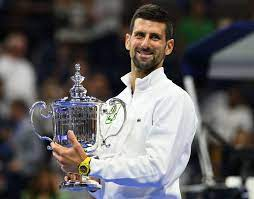
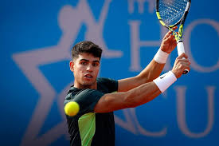
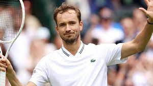

Top 3 beste tennissers 2023
De ATP-wereldranglijst is een rangschikking die waarbij de prestaties van de mannelijke tennissers wordt weegegeven. (ATP) staat voor Association of Tennis Proffesionals. Deze lijst is begonnen in 1973 en publiceert elke maandag een nieuwe versie. De top 3 van dit moment:
1. Novak Djokovic
Djokovic heeft 24 grandslamtitels en daarmee is hij de enige die zoveel grandslamtitels heeft gewonnen.
2. Carlos Alcarez
Hij is nog maar 20 jaar oud en heeft al 2 grandslamtitels gewonnen. Alcarez is een super groot talent.
3. Daniil Medvedev
Medvedev is een Russische tennisser die al een paar jaar op het hoogste niveau presteert. Hij heeft in totaal 1 grandslamtitel gewonnen.
